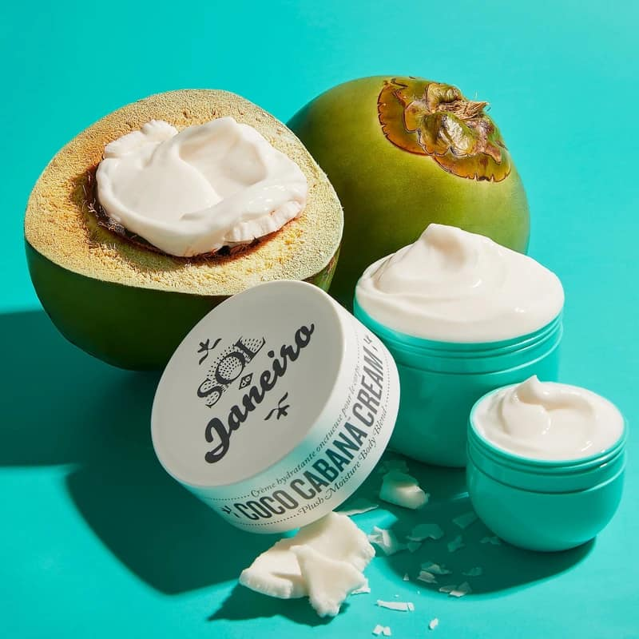

Give your skin some love with our brightening, hydrating and nourishing Skin Love Collection – a hybrid of skincare makeup products loaded with nature’s most skin loving ingredients.
Coconut milk is a rich, creamy liquid made from water and coconut pulp. ... Do not substitute cream of coconut. Cream of Coconut, Coconut Cream, or Coconut Butter – Cream of coconut is a smooth, thick liquid made from fresh coconuts. It is thick and very sweet, and commonly used in mixed drinks.
>